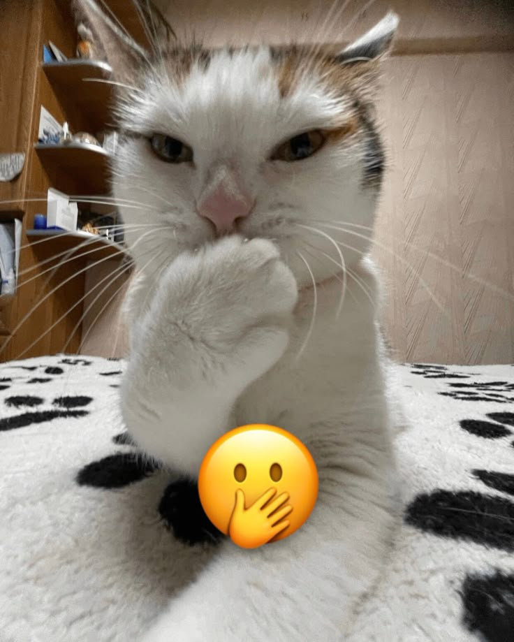

Tipos de Gatitos
Descubre los diferentes stickers de gatos, cada uno diseñado para expresar emociones y situaciones específicas. Desde el gato preocupado hasta el sorprendido, mira el gatin perfecto para cada momento.
Coleccion de Mishis


